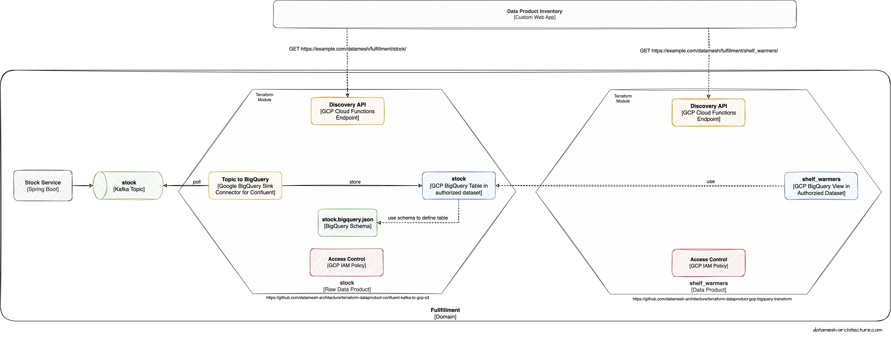

We've developed two open source Terraform Modules, Confluent Kafka to GCP BigQuery and GCP Bigquery Transform, to make provisioning of data products on GCP easier. The figure below shows a working example of the two Terraform modules.
Terraform Module "Confluent Kafka to GCP BigQuery"

The module is open-source and can be found on GitHub.
Terraform Module "GCP Bigquery Transform"
The goal of the Terraform module is to facilitate the creation and configuration of a dataproduct based on GCP BigQuery views. These views contain aggregated data from a GCP BigQuery table.
The module creates a BigQuery dataset named "aggregations" and one or multiple views based on a source table and SQL scripts provided by the user. The names of the views are derived from the names of the SQL scripts. Besides the SQL files and the source table, users must provide the domain and the name of the data product to be created.
The module also creates an HTTP endpoint where the meta information of the dataproduct are published: Name, domain and a list of the BigQuery views.

The module is open-source and can be found on GitHub.
Example usage
A working example which shows both modules in action can be found in a separate GitHub repository.
Join us!
Our Terraform modules don't have all features envisioned by Zhamak Dehghani in her Data Mesh book. Instead, our modules are just starting point for a collaborative, open-source development driven by the need of data product developers. Join us in making these modules even better or by providing even more modules.

{kind=link}